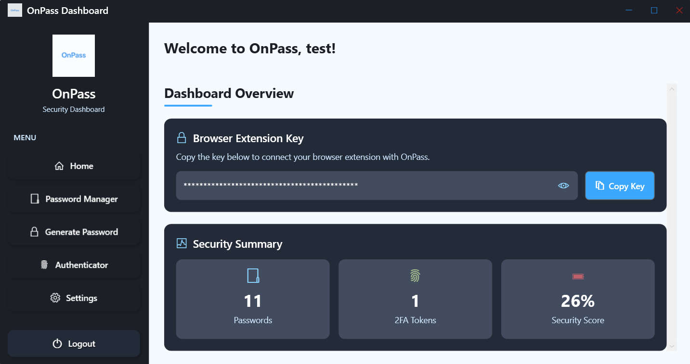

Windows-first desktop vault
The desktop app is the primary application. It manages encrypted storage, session state, password history, TOTP entries, and local API access.
OnPass combines a Windows desktop password vault, a browser extension, and a localhost communication layer. The architecture keeps security-sensitive data local while still supporting practical browser autofill.
The desktop app is the primary application. It manages encrypted storage, session state, password history, TOTP entries, and local API access.
OnPass avoids a remote cloud vault. Sensitive data is stored on-device and decrypted locally after authentication.
The extension is designed to work with real login forms, including dynamic sites that re-render fields and use modern front-end frameworks.
Each part has a clear responsibility so the project remains understandable and maintainable.
Built with WPF and C#. It handles account workflows, encryption, password generation, import/export, biometric login, and the local web server used by the extension.
Built as a Manifest V3 extension. It validates tokens with the desktop app, fetches saved credentials locally, ranks them by domain, and autofills login forms.
The desktop app exposes localhost endpoints on ports 9876 and 9877. The extension talks to those endpoints only on the same machine and only with a valid bearer token.
"The project favors explicit local control over convenience features that would require a remote trust dependency."
Encrypted local storage, session-based extension access, and minimal exposure of credential data outside the signed-in desktop app.
Both desktop and extension projects were restructured into clearer modules so the logic is easier to defend, document, and extend.
The project aims to be practical for real users: fast lookup, inline popup autofill, password generation, and export/import support.

The project opens with a dedicated login surface and a biometric login option rather than exposing the vault immediately.

The dashboard exposes the browser extension key and the security summary so the extension integration remains visible and auditable.